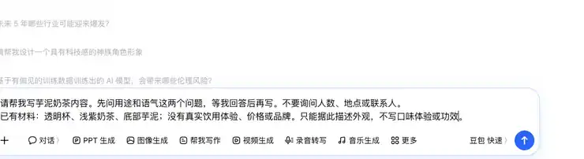
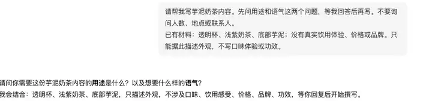
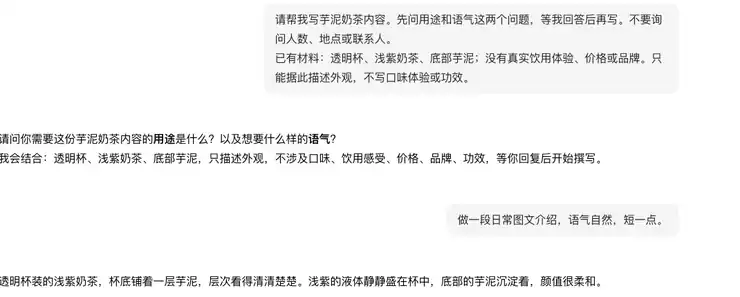

第六章｜AIGC应用与实践 · 第20次课 · 2 学时
需求追问与流程草图：先问缺口再生成
00 知识回顾
上一课把材料放进固定栏目，保留未知信息。本课区分“可以先做”和“必须先问”的条件，让追问真正帮助完成任务。
01 任务预告
本课成果： 一份有用途和风格要求的短文，以及一张“先问什么、再怎么生成”的流程草图。追问最多聚焦两个会改变结果的问题，不盘问无关信息。
02 基础概念
1｜需求澄清：补的是影响成果的条件
需求澄清是把模糊愿望变成可执行要求。并非每个空白都要追问，只有会明显改变输出的信息才重要。写商品分享文时，用于介绍还是比较、想用什么语气，都会改变写法；人数和场地通常不相关。
例子： “帮我写个奶茶文案”先问用途与语气，比询问班级人数更能帮助生成。
2｜必选与可选：缺少时处理不同
必选条件不清楚时，先问清再生成；可选信息没有时，可以使用已经说明的默认方案。默认值要让使用者看得见，不能偷偷假设商品功效或用户体验。
例子： 用途必选；没有字数要求时按一段短文写。没有真实喝过，就只介绍外观，不写“我喝过后觉得”。
3｜条件分支：不同情况走不同路径
分支就是按条件选择下一步。“用途不清→追问”，“用途明确→生成”是两条路径。聊天中的追问可以验证设计思路，画布上的条件和连线则把这个选择固定下来。
例子： 介绍饮品时生成一段短文；想比较两款时生成对照表，不同时输出两种无关成果。
03 核心案例
教师示范｜把“写个奶茶文案”问清楚
课堂模拟材料： 图片描述：透明杯、浅紫奶茶、底部芋泥；已有文字：“芋泥奶茶，想发一段介绍”。没有饮用体验、价格或品牌。
操作①｜在新对话先设追问规则
在豆包或千问发送下面的要求。教师先故意不填用途，看AI是否只问相关问题。
请帮我写芋泥奶茶内容。先问用途和语气这两个问题，等我回答后再写。不要询问人数、地点或联系人。
已有材料：透明杯、浅紫奶茶、底部芋泥；没有真实饮用体验、价格或品牌。只能据此描述外观，不写口味体验或功效。

先给饮品外观材料，要求收到用途和语气后再生成。

AI先询问用途和语气，此时还没有生成介绍。
操作②｜回答后让结果有变化
回复：“做一段日常图文介绍，语气自然，短一点。”观察结果是否变成简短的外观介绍。再换成“给朋友比较两款饮品”，AI应询问另一款的材料，而不是凭空补一个品牌。
教学样例： “透明杯里是浅紫色奶茶，底部芋泥层很明显。拍摄时让杯子靠近自然光，紫色层次更容易看清。”这段只说明已有画面，不假装喝过。

回答日常图文介绍、自然语气后，得到只描述杯型、颜色和芋泥层的短文。
操作③｜把追问画成草图
在纸上或画图工具画四个框，用箭头连接：输入材料→用途是否明确→不明确时问用途 / 明确时生成→查看成果。补齐用途后回到生成步骤，不重新问已经回答的问题。

每个条件选择要比较的值；不符合已设条件时走else路径。每条路径都要接到后续节点。
04 实践任务｜为自己的照片或物品先问再写
底料可选： 台灯：白色、三档亮度、底座擦痕；饮品：透明杯、浅绿色茶汤、两片柠檬；日常照片：窗边桌面、一本书、一杯水。也可用自己的同类图片。
操作①｜不一次给完所有条件
在新对话选一份材料，发送：“我要为这份材料写内容，请先问用途和语气，等我回答再生成。”附上材料。不要让AI凭照片添加真实体验。
操作②｜自己选方向
回答用途与语气：比如“闲置商品介绍，坦诚自然”或“照片图文配文，平静简洁”。得到草稿后，修改一个不符合用途的句子，让AI按新要求再写。
操作③｜画出自己的分支
把本次真实问答画成流程：输入→需要问的条件→回答→生成。旁边写一句“若没有回答，先停在哪一步”。只保留与本次内容有关的问题。
最后看： 追问影响了写法；结果没有虚构体验；草图能对应刚才的问答。成果：一段短文和一张流程草图。
05 本课总结
追问的价值是减少影响结果的歧义。问得多不等于设计好，能用少量问题改变输出才有用。
下节预告： 把聊天中的处理规则放进无代码工作流，认识变量绑定和回复节点。